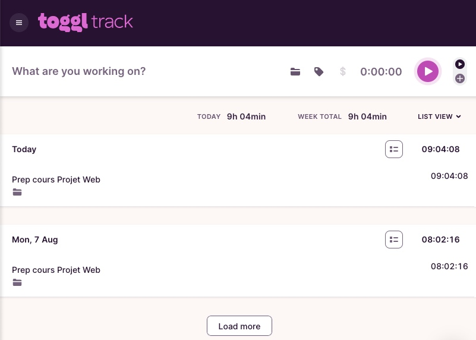

Dans le métier, vous aurez à faire des devis ou des évaluations de temps ou de coût pour des tâches spécifiques ou pour développer une fonctionnalité autour d'un scénario utilisateur (user story).
Il existe plusieurs méthodes pour vous aider, mais ça reste toujours un grand défi, surtout lorsque vous n'avez pas énormément d'expérience.
Je me rappelle encore, lorsque j'étais au CEGEP dans le même programme que vous il y a quelques années, le professeur nous conseillait littéralement d'évaluer la tâche le plus réalistement possible et ensuite, de communiquer à notre client ou chargé de projet notre évaluation préliminaire multiplié par 2.
...
Ça semble assez imprécis n'est-ce pas ? Mais j'ai réalisé avec le temps qu'il avait raison, du moins sur le résultat. On a parfois tendance à sous-évaluer tous les bogues et problèmes qui peuvent surgir sur notre parcours...
Nous en verrons une autre au prochain cours, qui ne remplace pas celle-ci mais qui la complémente.
La méthode de suivi de temps et l'analyse itérative qui pourrait vous aider éventuellement à être plus précis :
- Tentez d'évaluer le plus réalistement possible le travail à faire (en temps ou en $)
- Suivez votre temps de travail sur vos différentes tâches avec un outil approprié.
- Lorsque le travail est complété, prenez le temps de faire un post-portem. Comparez votre évaluation préliminaire avec votre rapport de temps réel. Analysez, apprenez, ajustez-vous pour la prochaine fois.
Pour ce cours-ci je vous présente Toggl. C'est gratuit et facile d'utilisation.
[... demo en classe ...]
Alternatives à Toggl
Il y aura une présentation client à la semaine 10 à propos de votre avancement : un rapport de temps des 10 semaines de chaque individu devra être fourni au Scrum Master qui devra lui-même présenter au client le résultat du travail de son équipe et de chaque individu.
Soyez honnêtes envers vous-même, c'est le meilleur conseil et apprentissage que vous allez pouvoir faire dans ce processus. Faites-le pour vous rendre service.